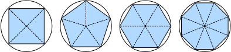

2.4. 微积分¶
很长一段时间里，如何计算 圆的面积一直是个谜。 后来，在古希腊，数学家阿基米德（Archimedes） 想出了一个巧妙的主意： 在圆内接一系列 顶点数不断增加的多边形 （图2.4.1）。 对于有\(n\)个顶点的多边形， 我们得到\(n\)个三角形。 随着我们把圆划分得越来越细， 每个三角形的高趋近于半径\(r\)。 同时，它的底趋近于\(2 \pi r/n\)， 因为当顶点数很大时， 弧长与弦长之比趋近于1。 因此，多边形的面积趋近于 \(n \cdot r \cdot \frac{1}{2} (2 \pi r/n) = \pi r^2\)。

图2.4.1 把圆的面积看作一个极限过程。¶
这种取极限的过程是 微分学（differential calculus）和积分学（integral calculus）的共同根源。 前者能告诉我们如何通过 改变函数的自变量来增大 或减小函数值。 这对我们在深度学习中 面对的优化问题很有帮助， 在优化中我们反复更新参数， 以减小损失函数。 优化解决的是如何让模型拟合训练数据的问题， 而微积分是它的关键前提。 然而，不要忘记我们的最终目标 是在以前从未见过的数据上表现良好。 这个问题称为泛化（generalization）， 它将是其他章节关注的关键问题。
%matplotlib inline
import numpy as np
from matplotlib_inline import backend_inline
from d2l import torch as d2l
%matplotlib inline
from matplotlib_inline import backend_inline
from mxnet import np, npx
from d2l import mxnet as d2l
npx.set_np()
%matplotlib inline
import numpy as np
from matplotlib_inline import backend_inline
from d2l import jax as d2l
%matplotlib inline
import numpy as np
from matplotlib_inline import backend_inline
from d2l import tensorflow as d2l
2.4.1. 导数和微分¶
简而言之，导数（derivative）是函数值 相对于其自变量变化的 变化率。 导数可以告诉我们，如果我们把每个参数 增大或减小一个无穷小的量， 损失函数会以多快的速度增大或减小。 形式上，对于从标量映射到标量的函数\(f: \mathbb{R} \rightarrow \mathbb{R}\)， \(f\)在点\(x\)处的导数定义为
右侧的这一项称为极限（limit）， 它告诉我们当某个指定的变量 趋近于某个特定值时， 一个表达式的值会发生什么变化。 这个极限告诉我们， 当我们把扰动的大小缩小到零时， 扰动\(h\)与函数值变化量 \(f(x + h) - f(x)\)之比 会收敛到什么值。
当\(f'(x)\)存在时，称\(f\) 在\(x\)处可微（differentiable）； 当\(f'(x)\)对某个集合（例如区间\([a,b]\)） 上所有\(x\)都存在时， 我们说\(f\)在该集合上可微。 并非所有函数都可微， 包括我们希望优化的许多函数， 例如准确率和 受试者工作特征曲线下面积（AUC，area under the receiving operating characteristic）。 然而，由于计算损失函数的导数 是几乎所有训练深度神经网络算法的 关键步骤， 我们往往改为优化一个可微的替代函数（surrogate）。
我们可以把导数 \(f'(x)\) 解释为\(f(x)\)关于\(x\)的瞬时 变化率。 让我们通过一个例子来建立一些直觉。 定义\(u = f(x) = 3x^2-4x\)。
def f(x):
return 3 * x ** 2 - 4 * x
def f(x):
return 3 * x ** 2 - 4 * x
def f(x):
return 3 * x ** 2 - 4 * x
def f(x):
return 3 * x ** 2 - 4 * x
令\(x=1\)，可以看到\(\frac{f(x+h) - f(x)}{h}\) 在\(h\)趋近于\(0\)时趋近于\(2\)。 虽然这个实验缺乏 数学证明的严谨性， 但我们可以很快看出确实有\(f'(1) = 2\)。
for h in 10.0**np.arange(-1, -6, -1):
print(f'h={h:.5f}, numerical limit={(f(1+h)-f(1))/h:.5f}')
导数有几种等价的记号约定。 给定\(y = f(x)\)，下列表达式等价：
其中符号\(\frac{d}{dx}\)和\(D\)是微分算子（differentiation operator）。 下面给出一些常见函数的导数：
由可微函数复合而成的函数 往往本身也可微。 在处理任意可微函数 \(f\)和\(g\)以及常数\(C\)的复合时， 下列法则会派上用场。
利用这些法则，我们可以通过下式 求出\(3 x^2 - 4x\)的导数
代入\(x = 1\)可以看出，在这个位置上 导数确实等于\(2\)。 请注意，导数告诉我们 函数在某个特定位置的斜率（slope）。
2.4.2. 可视化工具¶
我们可以使用matplotlib库把函数的斜率可视化。
我们需要定义几个函数。 顾名思义，use_svg_display
告诉matplotlib以SVG格式 输出图形，以便得到更清晰的图像。
注释#@save是一个特殊的修饰符， 它允许我们把任何函数、
类或其他代码块保存到d2l包中， 这样以后就可以调用它
而无需重复编写代码， 例如通过d2l.use_svg_display()调用。
def use_svg_display(): #@save
"""Use the svg format to display a plot in Jupyter."""
backend_inline.set_matplotlib_formats('svg')
很方便的是，我们可以用set_figsize设置图形大小。
由于导入语句from matplotlib import pyplot as plt
已通过#@save标记在d2l包中，
因此我们可以调用d2l.plt。
def set_figsize(figsize=(3.5, 2.5)): #@save
"""Set the figure size for matplotlib."""
use_svg_display()
d2l.plt.rcParams['figure.figsize'] = figsize
set_axes函数可以把坐标轴 与各种属性关联起来，包括标签、范围
和刻度。
#@save
def set_axes(axes, xlabel, ylabel, xlim, ylim, xscale, yscale, legend):
"""Set the axes for matplotlib."""
axes.set_xlabel(xlabel), axes.set_ylabel(ylabel)
axes.set_xscale(xscale), axes.set_yscale(yscale)
axes.set_xlim(xlim), axes.set_ylim(ylim)
if legend:
axes.legend(legend)
axes.grid()
有了这三个函数，我们就可以定义一个plot函数 来叠加多条曲线。
这里的很多代码只是确保 输入的大小和形状匹配。
#@save
def plot(X, Y=None, xlabel=None, ylabel=None, legend=[], xlim=None,
ylim=None, xscale='linear', yscale='linear',
fmts=('-', 'm--', 'g-.', 'r:'), figsize=(3.5, 2.5), axes=None):
"""Plot data points."""
def has_one_axis(X): # True if X (tensor or list) has 1 axis
return (hasattr(X, "ndim") and X.ndim == 1 or isinstance(X, list)
and not hasattr(X[0], "__len__"))
if has_one_axis(X): X = [X]
if Y is None:
X, Y = [[]] * len(X), X
elif has_one_axis(Y):
Y = [Y]
if len(X) != len(Y):
X = X * len(Y)
set_figsize(figsize)
if axes is None:
axes = d2l.plt.gca()
axes.cla()
for x, y, fmt in zip(X, Y, fmts):
axes.plot(x,y,fmt) if len(x) else axes.plot(y,fmt)
set_axes(axes, xlabel, ylabel, xlim, ylim, xscale, yscale, legend)
现在我们可以画出函数\(u = f(x)\) 及其在\(x=1\)处的切线\(y = 2x - 3\)， 其中系数\(2\)是切线的斜率。
x = np.arange(0, 3, 0.1)
plot(x, [f(x), 2 * x - 3], 'x', 'f(x)', legend=['f(x)', 'Tangent line (x=1)'])
2.4.3. 偏导数与梯度¶
到目前为止，我们一直在对 只有一个变量的函数求导。 在深度学习中，我们还需要处理 多个变量的函数。 下面简要介绍适用于这类 多元函数的导数概念。
设\(y = f(x_1, x_2, \ldots, x_n)\)是一个具有\(n\)个变量的函数。 \(y\)关于其第\(i^\textrm{th}\)个参数\(x_i\)的 偏导数（partial derivative）是
为了计算\(\frac{\partial y}{\partial x_i}\)， 我们可以把\(x_1, \ldots, x_{i-1}, x_{i+1}, \ldots, x_n\)当作常数， 并计算\(y\)关于\(x_i\)的导数。 下列偏导数记号约定 都很常见，而且含义相同：
我们可以把多元函数 关于其所有变量的偏导数 连结起来， 得到一个向量，这个向量称为 函数的梯度（gradient）。 假设函数 \(f: \mathbb{R}^n \rightarrow \mathbb{R}\) 的输入是一个\(n\)维向量 \(\mathbf{x} = [x_1, x_2, \ldots, x_n]^\top\)， 输出是一个标量。 函数\(f\) 关于\(\mathbf{x}\)的梯度 是一个由\(n\)个偏导数组成的向量：
当不存在歧义时， \(\nabla_{\mathbf{x}} f(\mathbf{x})\) 通常被替换为 \(\nabla f(\mathbf{x})\)。 下列法则在对多元函数求导时 会派上用场：
对所有\(\mathbf{A} \in \mathbb{R}^{m \times n}\)，有\(\nabla_{\mathbf{x}} \mathbf{A} \mathbf{x} = \mathbf{A}^\top\)以及\(\nabla_{\mathbf{x}} \mathbf{x}^\top \mathbf{A} = \mathbf{A}\)。
对\(\mathbf{A} \in \mathbb{R}^{n \times n}\)的方阵，有\(\nabla_{\mathbf{x}} \mathbf{x}^\top \mathbf{A} \mathbf{x} = (\mathbf{A} + \mathbf{A}^\top)\mathbf{x}\)，特别地 \(\nabla_{\mathbf{x}} \|\mathbf{x} \|^2 = \nabla_{\mathbf{x}} \mathbf{x}^\top \mathbf{x} = 2\mathbf{x}\)。
类似地，对任意矩阵\(\mathbf{X}\)， 有\(\nabla_{\mathbf{X}} \|\mathbf{X} \|_\textrm{F}^2 = 2\mathbf{X}\)。
2.4.4. 链式法则¶
在深度学习中，我们关心的梯度 往往难以计算， 因为我们要处理 深度嵌套的函数 （函数套函数，再套函数……）。 幸运的是，链式法则（chain rule）可以解决这个问题。 回到单变量函数， 假设\(y = f(g(x))\) 并且底层函数 \(y=f(u)\)和\(u=g(x)\) 都可微。 链式法则指出
再回到多元函数， 假设\(y = f(\mathbf{u})\)有变量 \(u_1, u_2, \ldots, u_m\)， 其中每个\(u_i = g_i(\mathbf{x})\) 有变量\(x_1, x_2, \ldots, x_n\)， 即\(\mathbf{u} = g(\mathbf{x})\)。 那么链式法则指出
其中\(\mathbf{A} \in \mathbb{R}^{n \times m}\)是一个矩阵， 它包含向量\(\mathbf{u}\) 关于向量\(\mathbf{x}\)的导数。 因此，求梯度需要 计算一个向量-矩阵积。 这也是线性代数 成为构建深度学习系统 不可或缺的基石之一 的关键原因。
2.4.5. 讨论¶
虽然我们只是触及了一个深刻主题的表面， 但已经有一些概念凸显出来： 首先，求导的复合法则 可以常规地应用，使我们能够 自动计算梯度。 这项任务不需要创造力， 因此我们可以把认知能力集中在别处。 其次，计算向量值函数的导数 要求我们在追踪 从输出到输入的变量依赖图时 进行矩阵乘法。 特别地，当我们计算一个函数值时， 这个图按前向方向遍历； 而当我们计算梯度时，则按反向方向遍历。 后续章节将正式介绍反向传播， 这是一种应用链式法则的计算过程。
从优化的角度来看，梯度让我们 能够确定如何移动模型的参数 以降低损失； 本书通篇使用的优化算法的每一步 都需要计算梯度。
2.4.6. 练习¶
到目前为止，我们把求导法则当作理所当然的。请利用定义和极限证明以下函数的性质：(i) \(f(x) = c\)，(ii) \(f(x) = x^n\)，(iii) \(f(x) = e^x\)，(iv) \(f(x) = \log x\)。
同样地，请从第一性原理出发证明乘积法则、求和法则和商法则。
证明常数倍法则可以作为乘积法则的特例推出。
计算\(f(x) = x^x\)的导数。
对某个\(x\)有\(f'(x) = 0\)意味着什么？请给出一个函数\(f\)和一个可能满足该条件的位置\(x\)的例子。
画出函数\(y = f(x) = x^3 - \frac{1}{x}\)的图像，并画出它在\(x = 1\)处的切线。
求函数\(f(\mathbf{x}) = 3x_1^2 + 5e^{x_2}\)的梯度。
函数\(f(\mathbf{x}) = \|\mathbf{x}\|_2\)的梯度是什么？当\(\mathbf{x} = \mathbf{0}\)时会发生什么？
你能写出\(u = f(x, y, z)\)且\(x = x(a, b)\)、\(y = y(a, b)\)、\(z = z(a, b)\)情形下的链式法则吗？
给定一个可逆函数\(f(x)\)，计算其反函数\(f^{-1}(x)\)的导数。这里\(f^{-1}(f(x)) = x\)，反过来\(f(f^{-1}(y)) = y\)。提示：在推导中利用这些性质。